Stripe Payments
Stripe is an online payment infrastructure that allows businesses to manage and accept payments securely.
Available from the Enterprise plan.
The Zyllio platform does not charge any fees on payments made through Stripe.
By integrating Zyllio with Stripe, you will benefit from its robust features, such as payment management, recurring billing, fraud protection, and much more.
Prerequisites
A valid Stripe account is required to connect the Stripe and Zyllio solutions.
Additionally, a subscription to the Zyllio Enterprise plan is needed to activate this feature.
Configuration
The Stripe integration can be activated from the Settings tab / Integration / Stripe by enabling the Enable button as shown in this image.
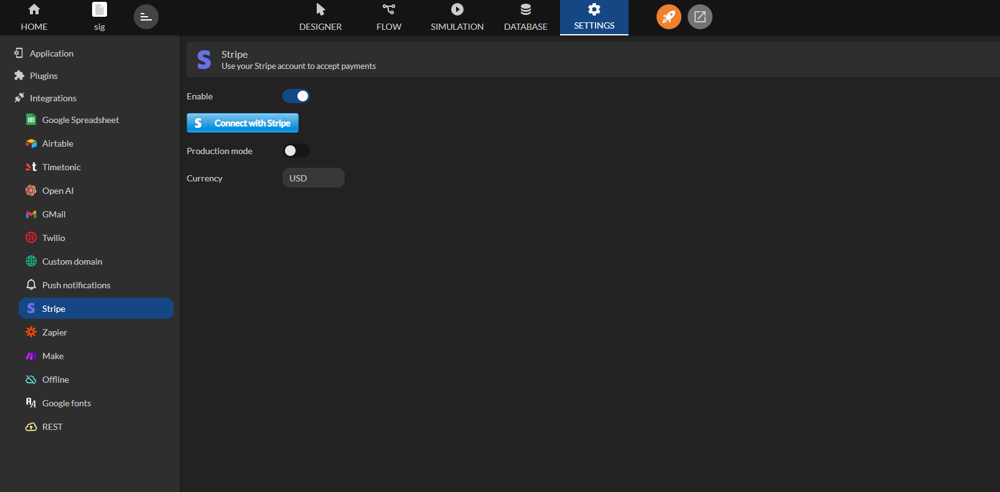
Connect Your Stripe Account
Next, click the Connect with Stripe button to link your account with the Zyllio platform.

Log in and click on Submit.
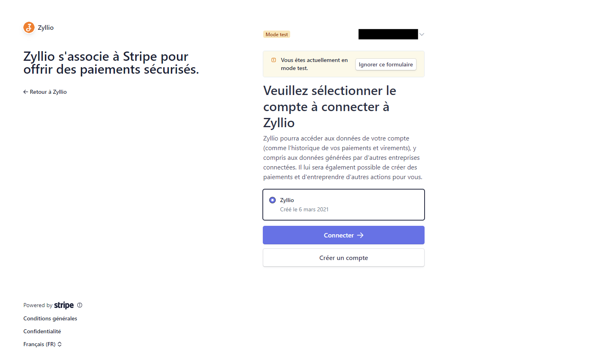
Finally, click the Connect button. Close the tab when the following message appears: "Your Stripe account has been connected. Please close this window."
Test and Production Mode
We recommend conducting all your Zyllio application design and payment testing in Test Mode.
During the testing period, the Production Mode option should be disabled.
Production mode can be enabled once the application is finalized.
Currency
The currency parameter allows you to specify the currency for payments in your mobile application.
| Currency name | Currency |
|---|---|
| Dollar | USD |
| Euro | EUR |
Creating Products
From the Database tab, click and drag a Products table into the workspace.

This way, Zyllio creates a ready-to-use table with 7 sample products.
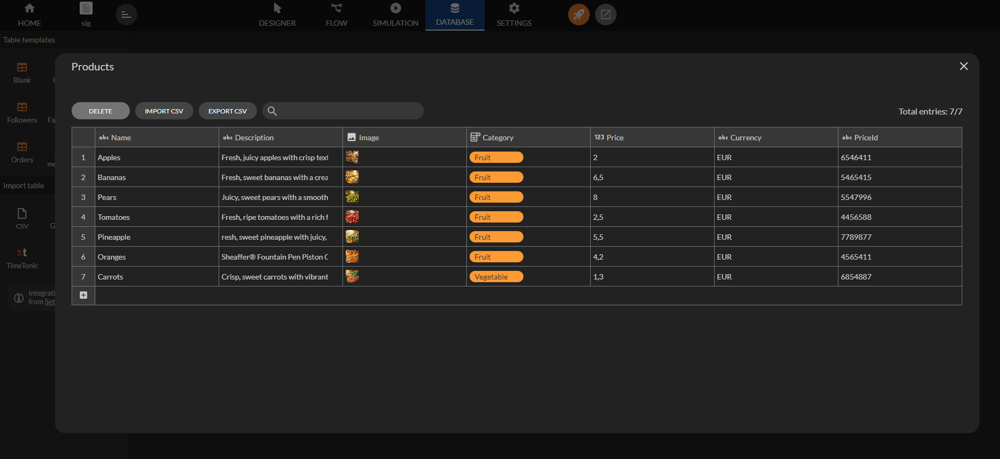
Creating Catalog Screens
From the Designer tab, select the List screen template and then select the Products table.
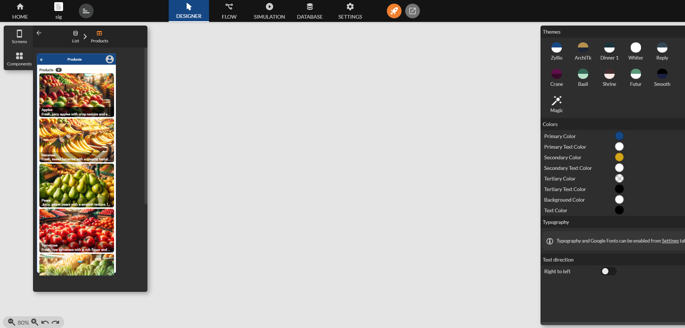
Click and drag the screen to create this first screen, then rename the screen to Products.
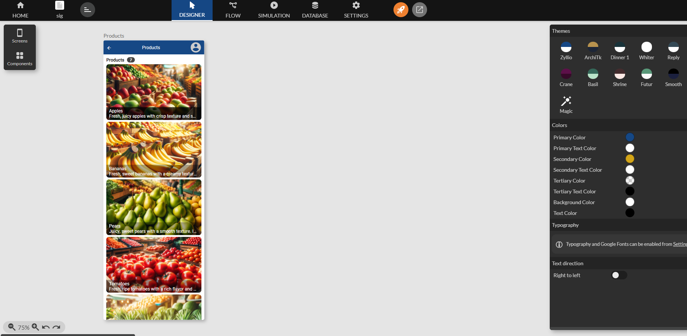
Next, create a detail screen by selecting a Details screen template, then choose the Products screen, and finally select the Products component.
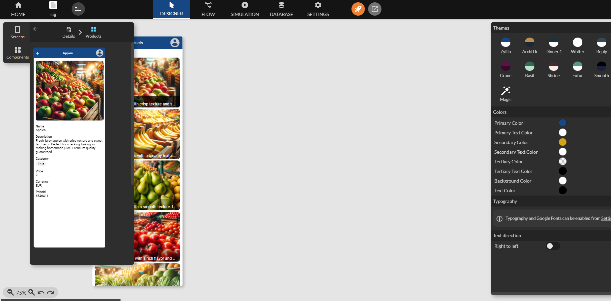
Click and drag the screen to create this new screen, then rename it to Details.
- Remove the Currency and PriceId components from the screen.
- Change the Price component to a Formula, then select the Currency format and the € symbol.
- Modify the Price component and change the Label property to Price.
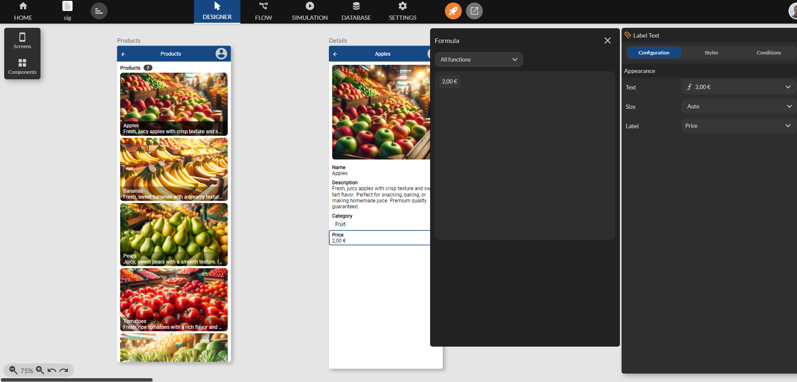
And link the two screens from the Flow tab.
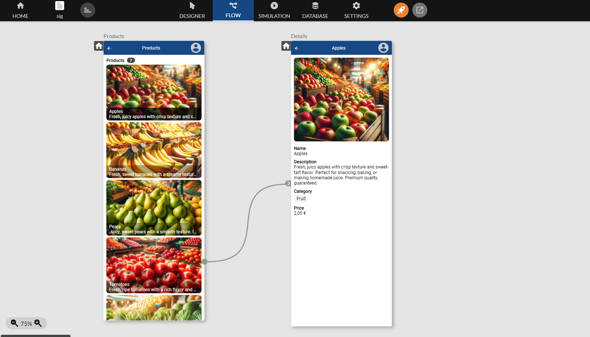
Authentication
Create an authentication screen using a Login screen template and then select the Users table. Next, link the Enter button to the Products screen.
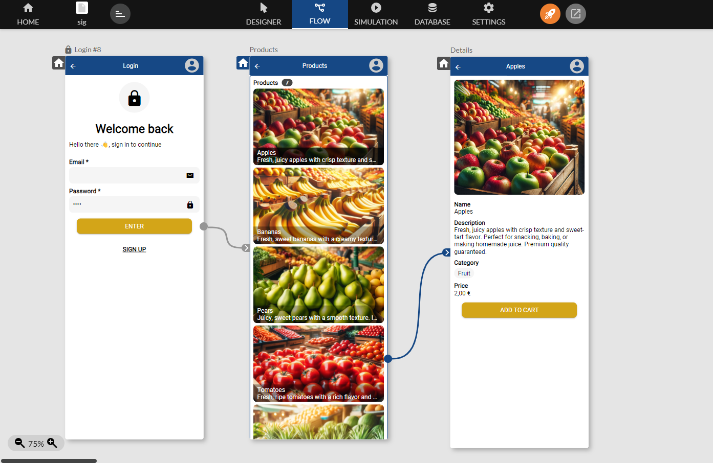
Designate the Login screen as the startup screen by clicking on the icon as shown below.

Creating a Cart
Add an Add to Cart button in the Details screen.

Define an Add Product action and fill in the following properties.
| Property | Type | Value |
|---|---|---|
| Image | Variable | Products/Image |
| Price Id | Variable | Products/PriceId |
| Name | Variable | Products/Name |
| Description | Variable | Products/Description |
| Price | Variable | Products/Price |
| Currency | Variable | Products/Currency |
| Quantity | Fixed | 1 |
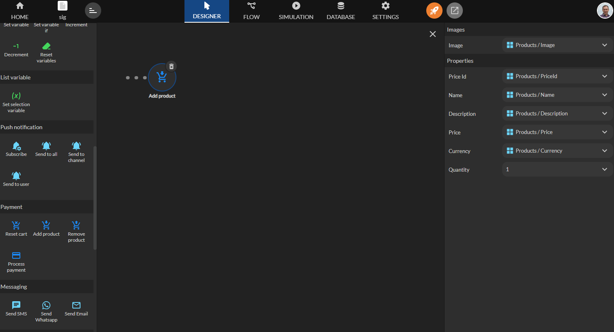
Next, create a screen called Cart to display the cart. Select a Cart component by choosing Fixed.

Drag the component into the screen as follows.
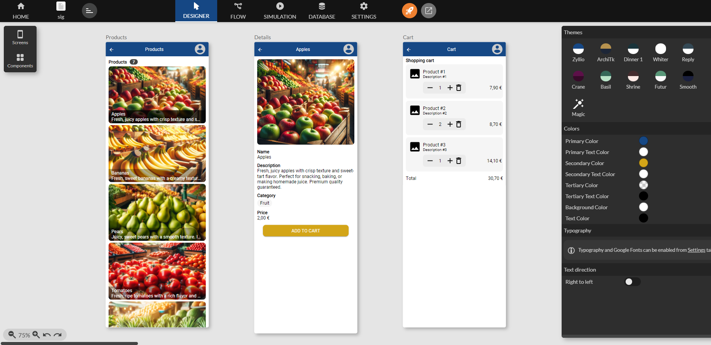
Link the Add To Cart button to the Cart screen.

Creating a Payment Button
Add a button called Pay that uses the Process Payment action.
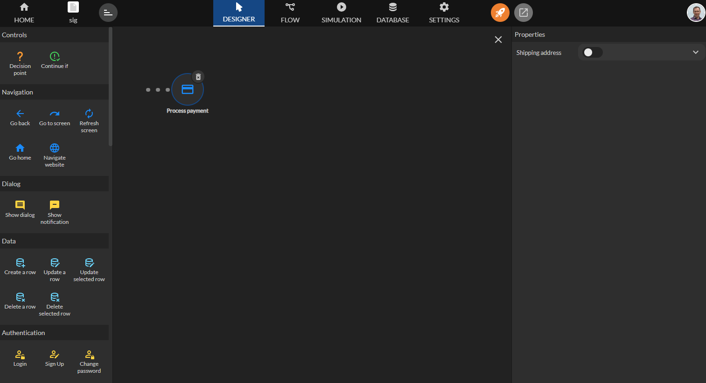
Define the price source
The screen below illustrates the configuration of the Stripe integration in your application. The elements highlighted in yellow emphasize the configuration of the price source, which is essential for linking your database data to Stripe.
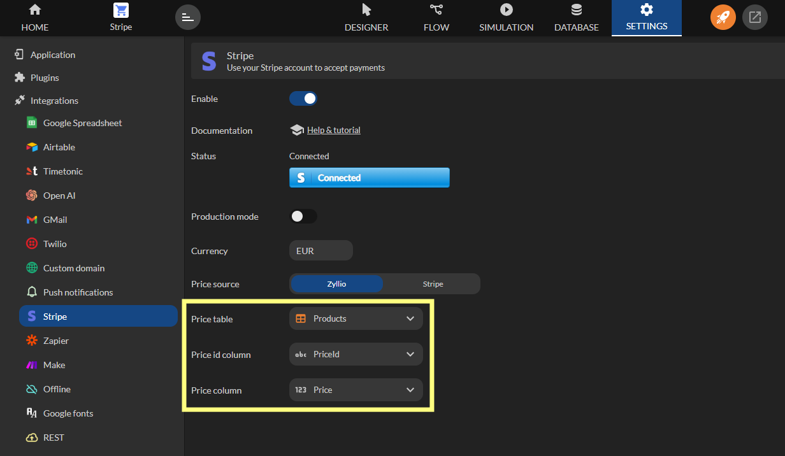
Here is an explanation of the different fields: Price Table, Price ID Column, Price Column.
| Field | Description | Example |
|---|---|---|
| Price Table | Select the table in your database that contains information about your products or services. This table serves as a reference for the prices that Stripe will use during transactions. | Products |
| Price ID Column | Select the column that contains the unique identifiers for the prices (Price ID). These identifiers allow Stripe to link the prices defined in your database to those configured in your Stripe account. | PriceId (e.g. price_12345) |
| Price Column | Select the column that contains the price values. This column defines the amount users will pay for a product or service. | Price (e.g. 10.00) |
At this stage, your application is ready to accept payments in test mode.
Testing a Payment
When conducting interactive tests, use a card number of type: 4242 4242 4242 4242.
- Use a valid expiration date such as 12/34.
- Use any three-digit CVC code (four digits for American Express cards).
- Use any value of your choice for the other fields in the form.
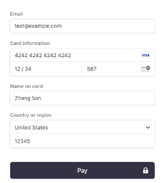
Payments appear in the Transactions section.

Reconciling in Zyllio
Zyllio captures successful payments in a specific table called Orders. Simply create it from the table templates in the Database tab.

Here is an example of a successful transaction.
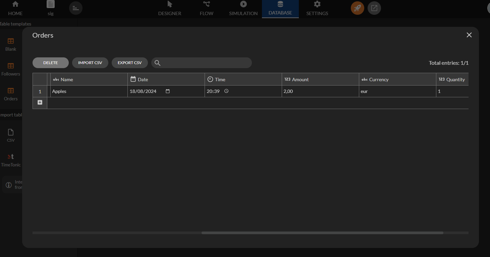
Displaying User Orders
Simply create a new screen called Orders that lists the contents of the Orders table.

A filter is needed to display only the orders of the authenticated user.
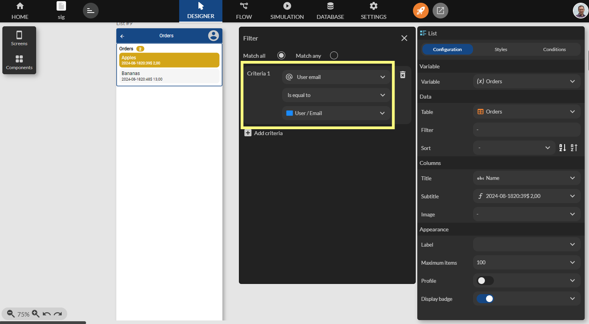
Errors
| Error | Stripe message | Reason |
|---|---|---|
| Payment failed, code 01 | The `price` parameter should be the ID of a price object, rather than the literal numerical price. Please see https://stripe.com/docs/billing/prices-guide#create-prices for more information about how to set up price objects. | One or more products have an undeclared priceId in the Stripe catalog |
| Payment failed, code 01 | The price specified supports currencies of `eur` which doesn't include the expected currency of `usd`. | A product currency does not match the Stripe integration currency in Zyllio Settings |
| Payment failed, code 02 | Requires payment method | The payment method is not valid |
| Payment failed, code 03 | Status unknown | Should not occur |